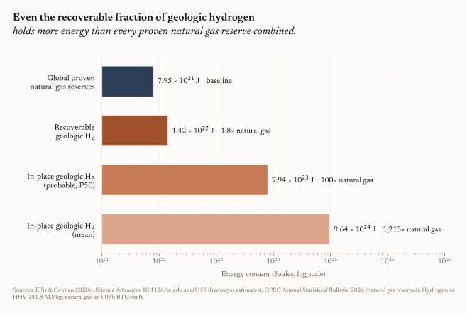
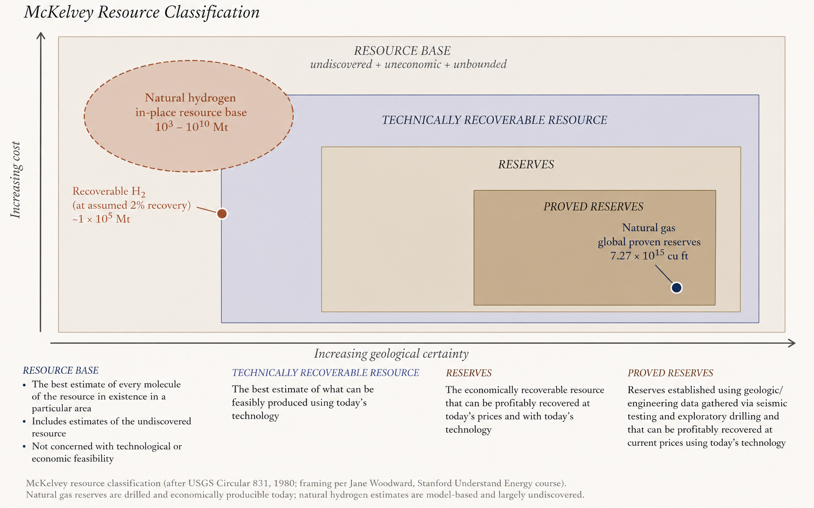
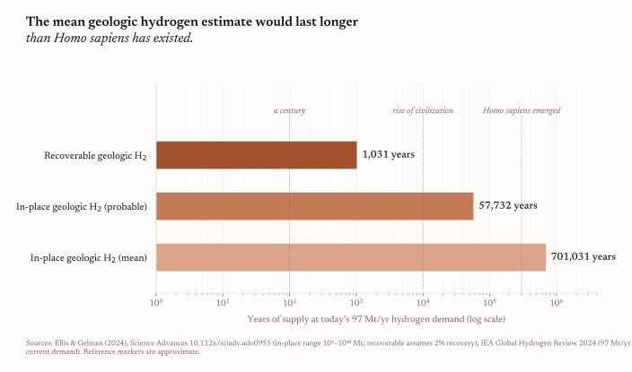

Natural Hydrogen Won't Replace Natural Gas. It Doesn't Need To.
The U.S. Geological Survey's 2024 estimate puts enough natural hydrogen in the Earth's crust to last us 701,031 years.
That number is not a typo. It is the simple arithmetic of dividing the mean estimate from a recent stochastic model by today's annual hydrogen demand. A mean of 68 million megatonnes of hydrogen sitting somewhere in the world's subsurface, divided by 97 megatonnes a year of current demand. Even the small fraction the paper calls plausibly recoverable holds, by the authors' own calculation, more energy than every proven natural gas reserve on Earth combined.
If you have read the press coverage, you have already seen the obvious conclusion drawn for you. Natural hydrogen is the energy transition's missing piece. Cleaner than gray hydrogen. Cheaper than green. Geologically abundant. A Swiss army knife for the climate problem.
I have spent the last several years exploring this resource. I built my Stanford master's thesis around it. I published the framework I called the Blind Hydrogen System, a contrarian view that subsurface generative geology, not surface fairy circles, is where the next discoveries live. I decided to do a PhD on it. I think the geology is real and the science of how rocks make hydrogen is settled.
I am also here to tell you that the framing the press is repeating is wrong. The claim that natural hydrogen will replace, or seriously compete with, natural gas is going to set the industry up to fail at exactly the moment it should be winning.
The argument I want to make is that energy is the wrong axis to compare these molecules on. The numbers are real. The conclusion drawn from them is not.
I did the math. The math says hydrogen wins.
The paper that started this conversation is Geoffrey Ellis and Sarah Gelman's 2024 contribution to Science Advances. The authors build a stochastic mass-balance model of natural hydrogen in the subsurface, tracking generation, trapping, residence time, and consumption by biotic and abiotic processes. Run the simulation enough times and a distribution emerges. The most-probable in-place value is 5.6 million megatonnes of hydrogen. The mean is 6.8 × 107 megatonnes. The full range spans seven orders of magnitude.
Most of that hydrogen is, by the authors' own admission, impractical to recover. Too deep, too dispersed, too far offshore, too small to be economic. But even at a conservative 2 percent recovery factor, roughly 100,000 megatonnes is plausibly extractable. The paper's headline framing, picked up by Science, The Economist, and the IEA's 2024 outlook, is that this recoverable fraction alone contains more energy than every proven natural gas reserve on Earth combined.
That is the comparison the world has been reading. I wanted to know what the comparison looked like at every tier of the Ellis and Gelman estimate, not just the recoverable one. So I built it.

Take Ellis and Gelman's three estimates and convert them to Joules using hydrogen's higher heating value. Take OPEC's published 2023 global proven natural gas reserves and convert those to Joules through standard heating-value factors. Plot them together. Natural gas comes in at 7.95 × 1021. Recoverable hydrogen comes in at 1.42 × 1022, roughly 1.8 times natural gas, matching the paper's headline. The probable in-place tier comes in at one hundred times natural gas. The mean comes in at more than a thousand times. Whatever scenario you pick, hydrogen wins the energy contest.
On its face, this chart looks settled. The molecule is everywhere. The molecule is clean. The molecule beats natural gas on energy at every level of the resource estimate. Why are we still talking about gas?
I built the chart. I am also here to tell you the chart misleads.
Why the comparison misleads
The arithmetic is correct. The framing is not.
We are comparing two ends of the resource spectrum as if they were the same thing
In 1980, the USGS published the framework that geologists and energy economists still teach as the McKelvey diagram. It places resources along two axes. Geological certainty runs left to right. Cost of extraction runs bottom to top. The lower-right corner is where you find proved reserves, drilled, tested, profitably producible at today's prices with today's technology. The upper-left is where you find the resource base, every molecule we suspect might be down there, no matter how speculative, no matter how uneconomic.

When OPEC publishes "global proven natural gas reserves of 7.27 × 1015 cubic feet," that number lives in the lower-right cell. Each one of those cubic feet has been demonstrated by drilling, characterized by engineering data, and certified as recoverable at current prices. It is the cash in the world's energy checking account.
When Ellis and Gelman publish "5.6 million megatonnes of in-place geologic hydrogen," that number lives in the upper-left cell. It is the integral of a stochastic model running across every continental basin on Earth. Almost none of it has been drilled. None of it has demonstrated economics. We have one commercial natural-hydrogen well in Mali and a handful of exploratory campaigns elsewhere.
These two numbers are not comparable. They sit at opposite ends of a classification scheme designed exactly to keep us from comparing them. Putting them side-by-side on an energy chart is like comparing the cash in your pocket to the dollar value of every mineral that might exist beneath your house. Even if both numbers are correct, the comparison itself is broken.
The recovery factor is a guess on top of a model
Set aside the McKelvey mismatch and focus on the recoverable fraction Ellis and Gelman cite. That number, 1 × 105 megatonnes, rests on a 2 percent recovery factor. Where does the 2 percent come from? Not from data. From authorial judgment. The paper acknowledges this.
For comparison, oil recovery from a typical reservoir runs 30 to 35 percent. Conventional natural gas runs 70 to 80. Those numbers come from a century of operations. Natural hydrogen recovery has never been demonstrated at industrial scale anywhere. We have one commercial well. The 2 percent assumption may turn out to be optimistic. It may turn out to be conservative. We do not yet know.
What we do know is that hydrogen is the smallest molecule in the periodic table, with a tendency to leak through reservoir seals, react with formation minerals, and feed subsurface microbial communities that consume it as fast as it migrates. Each of those processes is a candidate reason recoverability could be lower than the assumption. The mean in-place number rests on a mass-balance model. The recoverable fraction rests on a guess on top of that model.
A resource base is the integral of a slow flow
Buried in the methodology of Ellis and Gelman is a quieter, less photogenic number. The same mass-balance model that produces the in-place stock estimate also produces an estimate of how fast the Earth makes hydrogen in the first place. The most-probable annual generation rate is 24 megatonnes per year. The mean is roughly 50.
Current global hydrogen demand is 97 megatonnes per year. The IEA's projected demand under a net-zero pathway is 530.
The Earth is making hydrogen, but slower than we burn it. The reason the in-place stock looks infinite is that it is the integral of slow generation over geologic time. Drain it faster than nature replenishes and you are not running a renewable resource. You are mining.

The chart above shows what the mean in-place estimate looks like converted to years of supply at current demand. It comes to 701,031 years, longer than Homo sapiens has existed as a species. The number is real. It is also profoundly misleading. It assumes a recovery factor of 100 percent, an unchanging demand of 97 megatonnes a year, and a global pipeline-to-end-use system that has never been built.
In other words, the most generous reading of the most generous estimate produces a duration a thousand times longer than civilization itself, conditioned on assumptions no operator believes.
Even if everything cleared, the calendar is against us
Suppose every assumption above held. Suppose tomorrow we demonstrate 30 percent recovery in a basin near a major demand center. Suppose the in-place mean turns out to be conservative. Hydrogen-as-natural-gas-substitute still loses on time.
Replacing natural gas in power generation requires pipelines rated for hydrogen pressures, turbines redesigned for hydrogen combustion, storage caverns selected for hydrogen permeability, and end-use appliances re-engineered for a fuel that burns three times faster than methane and stores at one-third the volumetric energy density. By most estimates, that is thirty years of capital expenditure in the most optimistic scenario.
By the time it is done, gas-fired power has either been displaced by some combination of solar plus storage, geothermal, and small modular nuclear, all of which are cheaper than building a hydrogen economy from scratch, or it has survived precisely because it remains the best fit for that particular niche. Either way, hydrogen-as-natural-gas-substitute loses. It loses on speed. It loses on cost. It loses on infrastructure inertia. The fight cannot be won on the incumbent's strongest ground.
Where hydrogen gets the most bang for its buck
There are between four and six markets where hydrogen has no good substitute. They are the markets the natural hydrogen industry should be selling to.
Ammonia. Ninety percent of the world's nitrogen fertilizer is made from ammonia, which is made from hydrogen plus nitrogen. Today, almost all of that hydrogen is gray, manufactured from natural gas, responsible for roughly 2 percent of global CO2 emissions all by itself. Replacing gray hydrogen with low-carbon hydrogen for ammonia is not glamorous, but it is the single largest, most boring, and most valuable decarbonization opportunity in industrial chemistry.
Steel. Direct reduced iron, the leading clean-steel pathway, uses hydrogen instead of metallurgical coke to reduce iron ore. ArcelorMittal, SSAB, and H2 Green Steel are already deploying it at first-of-a-kind scale. Steel accounts for 7 to 8 percent of global CO2. Hydrogen is the only known route to clean primary steel.
Refining and petrochemicals. Hydrocracking, desulfurization, methanol synthesis. The infrastructure already runs on hydrogen, and demand is structural rather than aspirational.
Aviation and shipping. Synthetic fuels for long-haul transport, e-kerosene for aircraft, ammonia for marine engines. Batteries do not reach this segment.
Long-duration grid storage. Multi-day or seasonal energy buffering that lithium cannot economically deliver.
What unites these markets is what they have in common at the molecular level. None of them are well served by natural gas. None of them are displaced by solar plus batteries. Each is a market where hydrogen wins on chemistry, not on energy density per dollar.
The natural-hydrogen industry has spent the last two years pricing itself against natural gas. That is a fight on natural gas's strongest ground, where the incumbent is cheaper, deployed, and abundant. The honest sales pitch is the opposite. We can decarbonize the parts of the global economy that solar cannot reach, faster and cheaper than any other route. That is a market measured in many hundreds of billions of dollars. It does not require a 701,031-year reserve to make sense. It requires a few well-placed reservoirs near steel mills, ammonia plants, and refineries.
What this means for explorers, investors, and policy
Explorers. Stop hunting for hydrogen in the abstract. Start hunting for hydrogen near offtake. The economic value of a megatonne of natural hydrogen ten miles from a refinery or an ammonia plant is two orders of magnitude greater than the same megatonne in a remote basin. The Blind Hydrogen System framework, the view I published from my thesis work, was built for exactly this kind of search. Integrating subsurface generative geology with proximity to demand, rather than chasing surface anomalies in middle-of-nowhere locations.
Investors. Anchor portfolios in ammonia, steel, and refining. Be skeptical of pitches that benchmark terawatt-hours against natural gas. The market that pays is the molecule market, not the energy market.
Policymakers. Stop subsidizing hydrogen-as-natural-gas-substitute. That includes blue hydrogen for power, hydrogen blending in pipelines, and hydrogen-fired turbines designed to displace gas. Subsidize hydrogen-as-coke-substitute, hydrogen-as-ammonia-feedstock, and hydrogen-as-refining-input. Tie tax credits to molecule end-use, not to energy parity with fossil fuels.
Researchers. The science of hydrogen generation from rocks is settled enough. The open question is recoverability and rate, how fast we can actually produce hydrogen from a real reservoir, and how much of the in-place model number ever sees the surface. That is where the industry's credibility will be tested in the next ten years. That is the question the field needs to spend its money on.
Hydrogen as the energy system's co-pilot
The 701,031-year number is real. The energy is real. The science is real. But "we can power the world with this" is the wrong story to tell about it, and the people telling it are setting up a defeat we do not deserve.
Think about the analogous mistake we are watching unfold with artificial intelligence. AGI is not a replacement for human intelligence. It is a sophisticated tool, a co-pilot, valuable precisely where human cognition is bottlenecked. Try to frame it as a wholesale replacement and the technology fails on the comparison. Frame it as augmentation, deployed where it has comparative advantage, and the same technology pays for itself many times over.
Hydrogen is the same. It is not a replacement for the current energy system. It is a useful energy source in a few localized cases and a sophisticated, surgical energy vector in the industrial chemistry where nothing else works. The future of natural hydrogen lives in those sectors, with sparing localized use cases in transportation and stationary applications elsewhere. Sold honestly, this is a winning hand. Sold as a natural-gas killer, it is a losing one.
These are my views. I would in fact love to be wrong. A future in which large, concentrated natural hydrogen accumulations are found in basin after basin, near demand center after demand center, would fundamentally change the calculus, and is exactly the future I am betting my career on finding. The Blind Hydrogen System framework was built for that bet. Until the data clears, though, the honest answer is that natural hydrogen does not need to replace natural gas. It has its own job to do, and that job is bigger than the one we keep trying to give it.